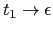
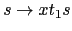
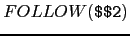

Sig: Recuperación de Errores Sup: Análisis Sintáctico Ascendente en Ant: Uso de union y Con:
$n), pero no a los que le siguen.
Cuando se inserta una acción
 para su ejecución en medio de una regla
para su ejecución en medio de una regla
 :
:
yacc crea una variable sintáctica temporal
Las acciones en mitad de una regla cuentan como un símbolo mas en la parte derecha de la regla. Asi pues, en una acción posterior en la regla, se deberán referenciar los atributos de los símbolos, teniendo en cuenta este hecho.
Las acciones en mitad de la regla pueden tener un atributo. La acción en cuestión puede
hacer referencia a ese atributo mediante $$, y las acciones posteriores
en la regla se referirán a él como $n, siendo n su número de orden
en la parte derecha. Dado que no existe un símbolo explícito que identifique a
la acción, no hay manera de que el programador declare su tipo. Sin embargo, es
posible utilizar la construcción $<valtipo># para especificar
la forma en la que queremos manipular su atributo.
Na hay forma de darle, en una acción a media regla, un valor al atributo asociado con
la variable en la izquierda de la regla de producción (ya que $$ se refiere
al atributo de la variable temporal utilizada para introducir la acción a media regla).
%union y de las
acciones en medio de una regla.
%{
#include <string.h>
char buffer[256];
#define YYDEBUG 1
%}
%union {
char tA;
char *tx;
}
%token <tA> A
%type <tx> x
%%
s : x { *$1 = '\0'; printf("%s\n",buffer); } '\n' s
|
;
x : A { $$ = buffer + sprintf(buffer,"%c",$1); }
| A { $<tx>$ = strdup("**"); } x
{ $$ = $3 + sprintf($3,"%s%c",$<tx>2,$1); free($2); }
;
%%
main() {
yydebug=1;
yyparse();
}
yyerror(char *s) {
printf("%s\n",s);
}
%{
#include "y.tab.h"
%}
%%
[\t ]+
[a-zA-Z0-9] { yylval.tA = yytext[0]; return A; }
(.|\n) { return yytext[0]; }
%%
yywrap() { return 1; }
yacc 10.4.1. ¿Cuál es la salida para la entrada
?
La gramática inicial se ve aumentada con dos nuevas variables sintácticas temporales y dos reglas  y . Además las reglas correspondientes pasan a ser:  y . El análisis de la entrada nos produce el siguiente árbol anotado:
yacc para la acción
en medio de la regla
s
x { *$1 = '\0'; printf("%s\n",buffer); } '\n' s
$$1. La asociada con la acción en medio de la regla
x
A { $<tx>$ = strdup("**"); } x
$$2.
$ yacc -d -v media4.y ; flex -l medial.l ; gcc -g y.tab.c lex.yy.c
$ a.out
ABC
yydebug: state 0, reading 257 (A)
yydebug: state 0, shifting to state 1
yydebug: state 1, reading 257 (A)
yydebug: state 1, reducing by rule 5 ($$2 :)
yydebug: after reduction, shifting from state 1 to state 4
yydebug: state 4, shifting to state 1
yydebug: state 1, reading 257 (A)
yydebug: state 1, reducing by rule 5 ($$2 :)
yydebug: after reduction, shifting from state 1 to state 4
yydebug: state 4, shifting to state 1
yydebug: state 1, reading 10 ('\n')
yydebug: state 1, reducing by rule 4 (x : A)
yydebug: after reduction, shifting from state 4 to state 6
yydebug: state 6, reducing by rule 6 (x : A $$2 x)
yydebug: after reduction, shifting from state 4 to state 6
yydebug: state 6, reducing by rule 6 (x : A $$2 x)
yydebug: after reduction, shifting from state 0 to state 3
yydebug: state 3, reducing by rule 1 ($$1 :)
C**B**A
yydebug: after reduction, shifting from state 3 to state 5
yydebug: state 5, shifting to state 7
yydebug: state 7, reading 0 (end-of-file)
yydebug: state 7, reducing by rule 3 (s :)
yydebug: after reduction, shifting from state 7 to state 8
yydebug: state 8, reducing by rule 2 (s : x $$1 '\n' s)
yydebug: after reduction, shifting from state 0 to state 2
x
A { $<tx>$ = strdup("**"); } x
x
{ $<tx>$ = strdup("**"); } A x?
$ yacc -d -v media3.y yacc: 1 rule never reduced yacc: 3 shift/reduce conflicts.¿Cuáles son esos 3 conflictos?
y.output comienza enumerando las reglas de
la gramática extendida:
1 0 $accept : s $end 2 3 1 $$1 : 4 5 2 s : x $$1 '\n' s 6 3 | 7 8 4 x : A 9 10 5 $$2 : 11 12 6 x : $$2 A x 13 ^LA continuación nos informa de un conflicto en el estado 0. Ante el token
A
no se sabe si se debe desplazar al estado 1
o reducir por la regla 5: $$2 : .
14 0: shift/reduce conflict (shift 1, reduce 5) on A 15 state 0 16 $accept : . s $end (0) 17 s : . (3) 18 $$2 : . (5) 19 20 A shift 1 21 $end reduce 3 22 23 s goto 2 24 x goto 3 25 $$2 goto 4Observe que, efectivamente,
$$2 : . esta
en la clausura del estado de arranque del NFA ($accept : . s $end)
Esto es asi, ya que al estar el marcador junto a x, estará el item
s : . x $$1 '\n' s y de aqui que también este
x : . $$2 A x.
Además el token A está en
el conjunto
 (Basta con mirar la regla 6 para confirmarlo).
Por razones análogas también está en la clausura del estado de
arranque el item x : . A que es el que motiva el
desplazamiento al estado 1.
La dificultad para yacc se resolvería si
dispusiera de información acerca de cual es el token
que viene después de la A que causa el conflicto.
A es \n?
¿Y si el token es A? ¿Se debe reducir o desplazar?Casiano Rodríguez León